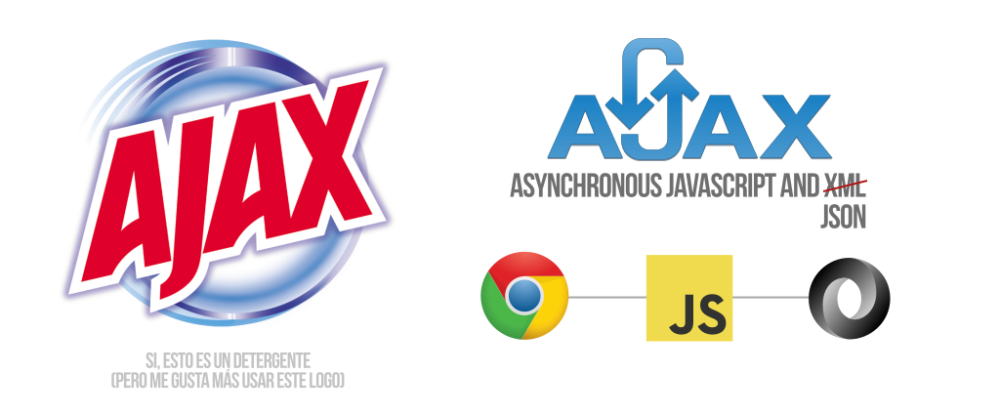
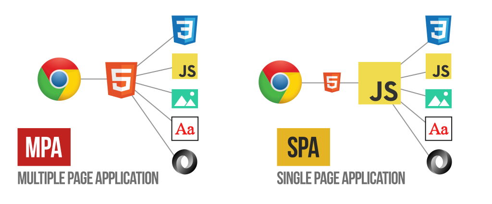
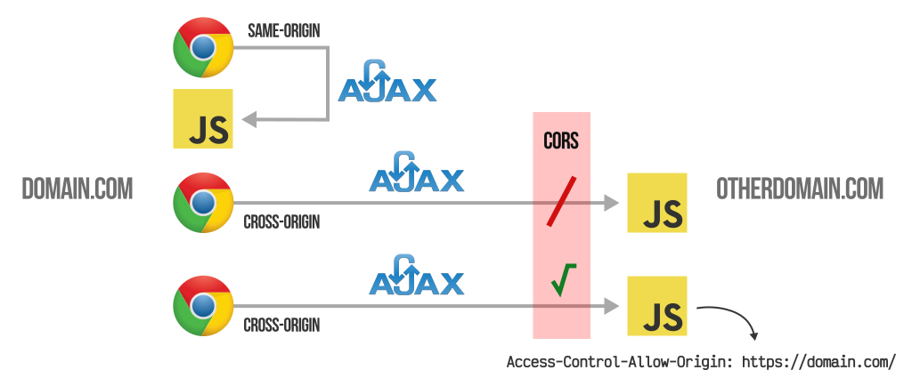
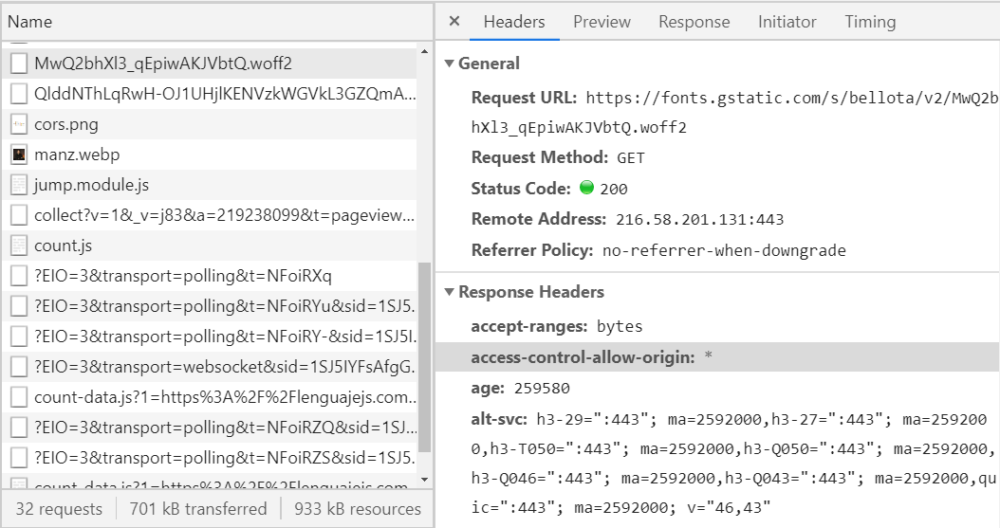

Peticiones HTTP¶
AJAX: Peticiones HTTP¶
Un navegador, durante la carga de una página, suele realizar múltiples peticiones HTTP a un servidor para solicitar los archivos que necesita renderizar en la página. Es el caso de, en primer lugar, el documento .html de la página (donde se hace referencia a múltiples archivos) y luego todos esos archivos relacionados: los ficheros de estilos .css, las imágenes .jpg, .png, .webp u otras, los scripts .js, las tipografías .ttf, .woff o .woff2, etc.
¿Qué es una petición HTTP?¶
Una petición HTTP es como suele denominarse a la acción por parte del navegador de solicitar a un servidor web un documento o archivo, ya sea un fichero .html, una imagen, una tipografía, un archivo .js, etc. Gracias a dicha petición, el navegador puede descargar ese archivo, almacenarlo en un caché temporal de archivos del navegador y, finalmente, mostrarlo en la página actual que lo ha solicitado.
Peticiones HTTP mediante AJAX¶
Con el tiempo, aparece una nueva modalidad de realizar peticiones, denominada AJAX (Asynchronous Javascript and XML). Esta modalidad se basa en que la petición HTTP se realiza desde Javascript, de forma transparente al usuario, descargando la información y pudiendo tratarla sin necesidad de mostrarla directamente en la página.
Esto produce un interesante cambio en el panorama que había entonces, puesto que podemos hacer actualizaciones de contenidos de forma parcial, de modo que se actualice una página «en vivo», sin necesidad de recargar toda la página, sino solamente actualizado una pequeña parte de ella, pudiendo utilizar Javascript para crear todo tipo de lógica de apoyo.

Originalmente, a este sistema de realización de peticiones HTTP se le llamó AJAX, donde la X significa XML, el formato ligero de datos que más se utilizaba en aquel entonces. Actualmente, sobre todo en el mundo Javascript, se utiliza más el formato JSON, aunque por razones fonéticas evidentes (y evitar confundirlo con una risa) se sigue manteniendo el término AJAX.
Posteriormente, y debido a una evolución a mayor escala relacionada con este tema, se ha pasado de crear páginas de tipo MPA por defecto, a crear páginas de tipo SPA, mucho más frecuentes en entornos empresariales hoy en día.
Métodos de petición AJAX¶
Existen varias formas de realizar peticiones HTTP mediante AJAX, pero las principales suelen ser XMLHttpRequest y fetch (nativas, incluidas en el navegador por defecto), además de liberías como axios o superagent:
| Método | Descripción |
|---|---|
XMLHttpRequest |
Se suele abreviar como XHR. El más antiguo, y también el más verbose. Nativo. |
fetch |
Nuevo sistema nativo de peticiones basado en promesas. Sin soporte en IE. |
| Axios | Librería basada en promesas para realizar peticiones en Node o navegadores. |
| superagent | Librería para realizar peticiones HTTP tanto en Node como en navegadores. |
| frisbee | Librería basada en fetch. Suele usarse junto a React Native. |
En los siguientes capítulos iremos viendo como funcionan.
MPA: Multiple Page Application¶
Tradicionalmente, el sistema que se seguía para crear páginas o aplicaciones web se enmarcaba dentro de la categoría de páginas MPA (Multiple Page Application). Bajo este sistema, el navegador se descarga el fichero .html, lo lee y luego realiza las peticiones de los restantes archivos relacionados que encuentra en el documento HTML. Si el usuario pulsa en algún enlace, se descarga el .html de dicho enlace (recargando la página completa) y se repite el proceso.

Este sistema es el que se observa en páginas en las que vamos navegando mediante enlaces, y al hacer click en ellos, se recarga la página completa. Generalmente, es el que se utiliza frecuentemente en sitios web más tradicionales, los que usan mayoritariamente backend.
SPA: Single Page Application¶
En el lado opuesto se encuentran las páginas de tipo SPA (Single Page Application). Se trata de un enfoque más moderno, donde el navegador se descarga una versión mínima de .html junto a un .js que se encargará de controlar toda la web. Realizará peticiones de los archivos relacionados junto a peticiones a archivos .json o .js con más información o nuevos contenidos, que mostrará en el navegador parcial o completamente, pero sin la necesidad obligatoria de recargar la página completamente.
Este sistema se utiliza mayoritariamente para construir aplicaciones web como dashboards o sitios de gestión en los que no necesitamos «navegar» a través de una serie de páginas. Por ejemplo, páginas como WhatsApp Web, Twitter o Google Drive podrían ser ejemplos de SPA.
Las páginas de tipo SPA son las que utilizan en la mayoría de los frameworks de Javascript, como por ejemplo, React, Vue o Angular.
XHR: XMLHttpRequest¶
XMLHttpRequest (XHR) es un objeto especial de Javascript que permite realizar peticiones HTTP asíncronas (AJAX) de forma nativa desde Javascript. Se trata de la primera implementación que existió en ECMAScript antes de surgir fetch, el estándar actual.
Actualmente es más frecuente utilizar
fetch, puesto que es una API más actual y moderna que utiliza promesas y nos permite hacer lo mismo (o más) y escribir menos código.
¿Qué es XMLHttpRequest?¶
El objeto XMLHttpRequest se creó originalmente para realizar peticiones HTTP a ficheros .xml externos desde Javascript. Actualmente, se realizan las mismas operaciones pero con ficheros JSON, ya que son mucho más habituales en el ecosistema Javascript como almacenamiento ligero de datos.
El mecanismo principal de peticiones HTTP mediante XMLHttpRequest es muy sencillo, aunque se vuelve un poco más complejo a medida que vamos realizando comprobaciones y detalles relacionados, ya que se realiza todo más a bajo nivel que su equivalente moderno fetch.
El primer paso es crear un objeto XMLHttpRequest (XHR):
// Creamos la instancia del objeto XHR
const client = new XMLHttpRequest();
Mediante esta instancia que acabamos de crear, podremos definir el tipo de petición utilizando el método open(method, url), indicando el método HTTP y la URL a la que queremos hacer la petición:
// Preparamos la petición y la enviamos
client.open("GET", "/robots.txt");
client.send();
Con el método .open() solo preparamos la petición, pero la haremos finalmente efectiva con el método .send(), el cuál lanzará la petición al servidor. Poco después, si consultamos el contenido de la propiedad .responseText (texto de respuesta) de nuestra instancia, comprobaremos que debería estar el contenido del fichero que hemos pedido:
// Consultamos la propiedad que almacena el contenido
console.log(client.responseText);
Este sería el funcionamiento base de las peticiones XHR, que como puedes ver, es muy sencillo. Sin embargo, esto es sólo la teoría. A la hora de la práctica hay más detalles que hay que tener en cuenta.
Por ejemplo, si has ejecutado línea por línea en una consola del navegador, habrás comprobado que este código funciona perfectamente. Sin embargo, si intentamos ejecutar todo el código de golpe, no funcionará; el valor de client.responseText nos aparecerá vacío.
Esto ocurre debido a que no estamos dando tiempo suficiente al navegador para realizar la petición del fichero /robots.txt al servidor, y por lo tanto, consultamos el resultado antes de tenerlo. Para solucionar esto, hay que esperar un tiempo para comprobar el valor, o mejor aún, hacerlo de forma asíncrona, como veremos más adelante.
El fichero
/robots.txtes un fichero de texto que suele existir en prácticamente todas las páginas webs. Se trata de un fichero de texto plano que indica las URL a las que los robots o crawlers (como el de Google) no deben acceder.
Política CORS¶
Habrás observado que estamos realizando peticiones relativas, es decir, al mismo dominio. Por defecto, en Javascript, las peticiones al mismo dominio de la web donde nos encontramos se pueden realizar sin ninguna restricción. Sin embargo, si intentamos realizarlas a otro dominio diferente, probablemente nos aparezca un error de CORS (Cross-Origin Resource Sharing) similar al siguiente:
Access to XMLHttpRequest at 'https://domain.com/robots.txt' from origin 'https://currentdomain.com/' has been blocked by CORS policy: No 'Access-Control-Allow-Origin' header is present on the requested resource.
Más adelante, en el capítulo CORS, abordaremos este tema y comentaremos los detalles que hay que cumplir para poder hacer peticiones a dominios externos, pero de momento nos limitaremos a realizarlos al propio dominio donde nos encontramos.
El objeto XMLHttpRequest¶
Al crear un objeto XMLHttpRequest tenemos acceso a una serie de propiedades que forman parte de nuestra instancia. Entre ellas, se encuentran las siguientes:
| Propiedad | Descripción |
|---|---|
.responseType |
Define el tipo de respuesta de .response: json, Blob, etc. Por defecto, text. |
.response |
Contenido parseado automáticamente basado en .responseType. |
.responseText |
Respuesta de la petición como texto plano o si no se ha recibido. |
.responseURL |
URL de la petición HTTP a realizar. |
.readyState |
Número que indica en que estado se encuentra la petición (ver más adelante). |
.timeout |
Milisegundos permitidos para realizar la petición HTTP. Por defecto, 0 (sin límite). |
.status |
Código de error HTTP de respuesta de la petición. |
.statusText |
Texto con el código de error de respuesta, legible para humanos. |
.withCredentials |
Indica si la petición HTTP se está realizando con credenciales. |
En primer lugar, las propiedades .responseType y .response se usan conjuntamente, debido a que si establecemos un valor en .responseType antes de hacer la petición, se procesará automáticamente la respuesta en .response. Por ejemplo, si establecemos el valor json en la propiedad .responseType, en .response obtendremos el objeto JSON ya parseado.
Por otro lado, en la propiedad .responseText siempre obtendremos el valor de texto puro, por si ese proceso de parseo queremos hacerlo manualmente. En la propiedad .responseURL tendremos la ruta completa de la petición HTTP.
Por otro lado, tenemos la propiedad .readyState, en la cuál profundizaremos más adelante. Básicamente nos devuelve un valor que determina en que punto se encuentra la petición (iniciada, enviada, procesándose, finalizada). Es muy útil para saber cuando realizar ciertas acciones.
La propiedad .timeout indica el número de milisegundos máximo que permitiremos para realizar la petición. De ser superior a este tiempo, la petición se descartará. Por defecto viene establecido a 0, que significa que no hay límite de tiempo para la petición.
Las propiedades .status y .statusText nos muestran el código de error HTTP devuelto por la petición. La propiedad .status de vuelve el número en cuestión (200 = OK, 404 = Not Found, etc...) y la propiedad .statusText nos devuelve un texto un poco más legible donde nos da algo más de información.
Por último, el booleano .withCredentials nos indica si la petición se ha realizado enviando un usuario y contraseña o simplemente se trata de una petición sin indicar credenciales.
Métodos de XMLHttpRequest¶
Lo que vemos a continuación es una lista de los métodos que podemos utilizar en nuestra instancia de XMLHttpRequest, donde tenemos algunos otros métodos a parte de .open() y .send():
| Método | Descripción |
|---|---|
.setRequestHeader(``n, v) |
Permite añadir la cabecera n con el valor v a la petición HTTP. |
.getAllResponseHeaders() |
Obtiene todas las cabeceras HTTP de la respuesta de la petición. |
.getResponseHeader(``name) |
Obtiene una cabecera HTTP concreta de la respuesta de la petición. |
.overrideMimeType(``mimetype) |
Permite modificar el MIME (tipo de fichero) de la petición. |
.open(``method, url) |
Permite preparar una petición HTTP. |
.send() |
Envía la petición previamente preparada con .open(). |
.send(``body) |
Idem a la anterior, enviando datos en la petición. |
.abort() |
Cancela la petición enviada. |
Los tres primeros se utilizan para temas relacionados con las cabeceras de la petición HTTP. El primero para la petición que enviamos (permite añadir cabeceras) y los dos siguientes para la petición de respuesta que recibimos, tanto obtener todas las cabeceras con .getAllResponseHeaders(), como obtener una específica .getResponseHeader(name).
El método .overrideMimeType() nos permite modificar (sobreescribir) el MIME de la petición recibido desde el servidor, muy útil cuando queremos forzarlo a uno diferente.
Por último, tenemos los métodos .open(), .send() y .abort() utilizados para iniciar, enviar y cancelar la petición respectivamente. En el caso de .send() es posible indicar un parámetro opcional que sea un objeto para enviar junto a la petición.
Eventos de XMLHttpRequest¶
El objeto XMLHttpRequest tiene varios eventos disponibles que podemos utilizar:
| Evento | Descripción |
|---|---|
.onabort |
Se dispara cuando una petición es cancelada. |
.onload |
Se dispara cuando una petición se ha completado correctamente. |
.onloadstart |
Se dispara cuando una petición comienza a cargar datos. |
.onloadend |
Se dispara cuando una petición termina (con error o sin ellos). |
.onerror |
Se dispara cuando una petición sufre un error. |
.ontimeout |
Se dispara cuando una petición agota el tiempo máximo. |
.onprogress |
Se dispara (varias veces) cuando una petición recibe datos. |
.onreadystatechange |
Se dispara cuando el valor .readyState cambia. |
Los eventos del objeto XMLHttpRequest son bastante autodescriptivos. Quizás, el más complejo sea el evento readystatechange, el cuál tiene relación directa con la propiedad .readyState y explicaremos detalladamente en el siguiente apartado.
El ciclo readyState¶
La propiedad .readyState de nuestra instancia client es un valor numérico (representado por una constante) que indica en el punto de progreso en que se encuentra la petición HTTP.
Esto es muy fácil de entender si pensamos en los clásicos spinners que se suelen utilizar para indicar que se está procediendo a obtener y descargar información. Habitualmente, estos spinners aparecen si la propiedad .readyState se encuentra entre 1 y 3:
Valor Constante|Descripción
:---|:---|:---
0|XMLHttpRequest.UNSENT|Estado inicial. No se ha ejecutado aún .open().
1|XMLHttpRequest.OPENED|Se ha ejecutado open(), pero no se ha ejecutado aún .send().
2|XMLHttpRequest.HEADERS_RECEIVED|Se ha ejecutado send(). Cabeceras recibidas.
3|XMLHttpRequest.LOADING|Descarga de información en proceso.
4|XMLHttpRequest.DONE|Descarga finalizada.
Para verlo más claramente, podemos observar el siguiente código, donde a través de la escucha del evento readystatechange de la instancia en cuestión, podemos estar pendientes de cuando obtenemos la información (readyState igual a 4 y status 200 OK):
const client = new XMLHttpRequest();
client.addEventListener("readystatechange", () => {
if (client.readyState === 4 && client.status === 200)
console.log(client.responseText);
});
client.open("GET", "/robots.txt");
client.send();
Una vez hemos entendido todos estos apartados, estamos preparados para realizar peticiones HTTP utilizando XHR. Sin embargo, es altamente recomendable echar un vistazo a los siguientes capítulos, donde abordamos sistemas más modernos como fetch, que permiten realizar peticiones de una forma mucho más cómoda, utilizando promesas.
Fetch: Peticiones Asíncronas¶
Una vez aprendemos a realizar peticiones HTTP mediante XHR nos damos cuenta que es un mecanismo muy interesante y útil, y que nos abre un mundo de posibilidades trabajando con Javascript. Sin embargo, con el tiempo nos vamos dando cuenta también, que la forma de trabajar con objetos XMLHttpRequest, aunque es muy potente requiere mucho trabajo que hace que el código no sea tan legible y práctico como quizás debería.
Entonces es cuando surge fetch, un sistema más moderno, basado en promesas de Javascript, para realizar peticiones HTTP asíncronas de una forma más legible y cómoda.
Peticiones HTTP con fetch¶
Fetch es el nombre de una nueva API para Javascript con la cuál podemos realizar peticiones HTTP asíncronas utilizando promesas y de forma que el código sea un poco más sencillo y menos verbose. La forma de realizar una petición es muy sencilla, básicamente se trata de llamar a fetch y pasarle por parámetro la URL de la petición a realizar:
// Realizamos la petición y guardamos la promesa
const request = fetch("/robots.txt");
// Si es resuelta, entonces...
request.then(function(response) { ... });
El fetch() devolverá una que será aceptada cuando reciba una respuesta y sólo será rechazada si hay un fallo de red o si por alguna razón no se pudo completar la petición. El modo más habitual de manejar las promesas es utilizando .then(). Esto se suele reescribir de la siguiente forma, que queda mucho más simple:
fetch("/robots.txt")
.then(function(response) {
/** Código que procesa la respuesta **/
});
Al método .then() se le pasa una función callback donde su parámetro response es el objeto de respuesta de la petición que hemos realizado. En su interior realizaremos la lógica que queramos hacer con la respuesta a nuestra petición. A la función fetch(url, options) se le pasa por parámetro la url de la petición y, de forma opcional, un objeto options con opciones de la petición HTTP.
Vamos a examinar un código donde veamos un poco mejor como hacer la petición con fetch:
// Opciones de la petición (valores por defecto)
const options = {
method: "GET"
};
// Petición HTTP
fetch("/robots.txt", options)
.then(response => response.text())
.then(data => {
/** Procesar los datos **/
});
Un poco más adelante, veremos como trabajar con la respuesta response, pero vamos a centrarnos ahora en el parámetro opcional options de la petición HTTP. En este objeto podemos definir varios detalles:
| Campo | Descripción |
|---|---|
method |
Método HTTP de la petición. Por defecto, GET. Otras opciones: HEAD, POST, etc... |
body |
Cuerpo de la petición HTTP. Puede ser de varios tipos: String, FormData, Blob, etc... |
headers |
Cabeceras HTTP. Por defecto, {}. |
credentials |
Modo de credenciales. Por defecto, omit. Otras opciones: same-origin e include. |
Lo primero, y más habitual, suele ser indicar el método HTTP a realizar en la petición. Por defecto, se realizará un GET, pero podemos cambiarlos a HEAD, POST, PUT o cualquier otro tipo de método. En segundo lugar, podemos indicar objetos para enviar en el body de la petición, así como modificar las cabeceras en el campo headers:
const options = {
method: "POST",
headers: {
"Content-Type": "application/json"
},
body: JSON.stringify(jsonData)
};
Por último, el campo credentials permite modificar el modo en el que se realiza la petición. Por defecto, el valor omit hace que no se incluyan credenciales en la petición, pero es posible indicar los valores same-origin, que incluye las credenciales si estamos sobre el mismo dominio, o include que incluye las credenciales incluso en peticiones a otros dominios.
Recuerda que estamos realizando peticiones relativas al mismo dominio. En el caso de realizar peticiones a dominios diferentes obtendríamos un problema de CORS (Cross-Origin Resource Sharing) similar al siguiente:
Access to fetch at 'https://otherdomain.com/file.json' from origin 'https://domain.com/' has been blocked by CORS policy: No 'Access-Control-Allow-Origin' header is present on the requested resource. If an opaque response serves your needs, set the request's mode to 'no-cors' to fetch the resource with CORS disabled.
Más adelante hablaremos de CORS y de como solucionar estos problemas si necesitamos realizar peticiones a otros dominios.
Cabeceras (Headers)¶
Aunque en el ejemplo anterior hemos creado las cabeceras como un genérico de Javascript, es posible crear un objeto Headers con el que trabajar:
const headers = new Headers();
headers.set("Content-Type", "application/json");
headers.set("Content-Encoding", "br");
Para ello, a parte del método .set() podemos utilizar varios otros para trabajar con cabeceras, comprobar su existencia, obtener o cambiar los valores o incluso eliminarlos:
| Método | Descripción |
|---|---|
.has(``name) |
Comprueba si la cabecera name está definida. |
.get(``name) |
Obtiene el valor de la cabecera name. |
.set(``name, value) |
Establece o modifica el valor value a la cabecera name. |
.append(``name, value) |
Añade un nuevo valor value a la cabecera name. |
.delete(``name) |
Elimina la cabecera name. |
Como muchos otros objetos iterables, podemos utilizar los métodos .entries(), .keys() y/o .values() para recorrerlos:
for ([key, value] of headers.entries()) {
console.log("Clave: ", key, "valor: ", value);
}
Para peticiones con pocas cabeceras no es mayor problema, pero en peticiones más complejas utilizar Headers es una buena práctica.
Respuesta de la petición HTTP¶
Si volvemos a nuestro ejemplo de la petición con fetch, observaremos que en el primer .then() tenemos un objeto response. Se trata de la respuesta que nos llega del servidor web al momento de recibir nuestra petición:
// Petición HTTP
fetch("/robots.txt", options)
.then(response => response.text())
.then(data => {
/** Procesar los datos **/
});
Aunque en este ejemplo, simplemente estamos utilizando una arrow function que hace un return implícito de la promesa que devuelve el método .text(), dicho objeto response tiene una serie de propiedades y métodos que pueden resultarnos útiles al implementar nuestro código.
Por el lado de las propiedades, tenemos las siguientes:
| Propiedad | Descripción |
|---|---|
.status |
Código de error HTTP de la respuesta (100-599). |
.statusText |
Texto representativo del código de error HTTP anterior. |
.ok |
Devuelve true si el código HTTP es 200 (o empieza por 2). |
.headers |
Cabeceras de la respuesta. |
.url |
URL de la petición HTTP. |
Si venimos de XMLHttpRequest, esto no nos resultará nada extraño. Las propiedades .status y statusText nos devuelven el código de error HTTP de la respuesta en formato numérico y cadena de texto respectivamente.
Sin embargo, existe una novedad respecto a XHR, y es que tenemos una propiedad .ok que nos devuelve true si el código de error de la respuesta es un valor del rango 2xx, es decir, que todo ha ido correctamente. Así pues, tenemos una forma práctica y sencilla de comprobar si todo ha ido bien al realizar la petición:
fetch("/robots.txt")
.then(response => {
if (response.ok)
return response.text()
})
Por último, tenemos la propiedad .headers que nos devuelve las cabeceras de la respuesta y la propiedad .url que nos devuelve la URL completa de la petición que hemos realizado.
Métodos de procesamiento¶
Por otra parte, la instancia response también tiene algunos métodos interesantes, la mayoría de ellos para procesar mediante una promesa los datos recibidos y facilitar el trabajo con ellos:
| Método | Descripción |
|---|---|
.text() |
Devuelve una promesa con el texto plano de la respuesta. |
.json() |
Idem, pero con un objeto json. Equivalente a usar JSON.parse(). |
.blob() |
Idem, pero con un objeto Blob (binary large object). |
.arrayBuffer() |
Idem, pero con un objeto ArrayBuffer (buffer binario puro). |
.formData() |
Idem, pero con un objeto FormData (datos de formulario). |
.clone() |
Crea y devuelve un clon de la instancia en cuestión. |
Response.error() |
Devuelve un nuevo objeto Response con un error de red asociado. |
Response.redirect(url, code) |
Redirige a una url, opcionalmente con un code de error. |
Observa que en los ejemplos anteriores hemos utilizado response.text(). Este método indica que queremos procesar la respuesta como datos textuales, por lo que dicho método devolverá una con los datos en texto plano, facilitando trabajar con ellos de forma manual:
fetch("/robots.txt")
.then(response => response.text())
.then(data => console.log(data));
Observa que en este fragmento de código, tras procesar la respuesta con response.text(), devolvemos una con el contenido en texto plano. Esta se procesa en el segundo .then(), donde gestionamos dicho contenido almacenado en data.
Ten en cuenta que tenemos varios métodos similares para procesar las respuestas. Por ejemplo, el caso anterior utilizando el método response.json() en lugar de response.text() sería equivalente al siguiente fragmento:
fetch("/contents.json")
.then(response => response.text())
.then(data => {
const json = JSON.parse(data);
console.log(json);
});
Como se puede ver, con response.json() nos ahorraríamos tener que hacer el JSON.parse() de forma manual, por lo que el código es algo más directo.
Ejemplo utilizando promesas¶
Lo que vemos a continuación sería un ejemplo un poco más completo de todo lo que hemos visto hasta ahora:
- Comprobamos que la petición es correcta con
response.ok - Utilizamos
response.text()para procesarla - En el caso de producirse algún error, lanzamos excepción con el código de error
- Procesamos los datos y los mostramos en la consola
-
En el caso de que la sea rechazada, capturamos el error con el
catch// Petición HTTP fetch("/robots.txt") .then(response => { if (response.ok) return response.text() else throw new Error(response.status); }) .then(data => { console.log("Datos: " + data); }) .catch(err => { console.error("ERROR: ", err.message) });
De hecho, podemos refactorizar un poco este ejemplo para hacerlo más legible. Creamos la función isResponseOk() para procesar la respuesta (invirtiendo el condicional para hacerlo más directo). Luego, los .then() y .catch() los utilizamos con una arrow function para simplificarlos:
const isResponseOk = (response) => {
if (!response.ok)
throw new Error(response.status);
return response.text()
}
fetch("/robots.txt")
.then(response => isResponseOk(response))
.then(data => console.log("Datos: ", data))
.catch(err => console.error("ERROR: ", err.message));
Sin embargo, aunque es bastante común trabajar con promesas utilizando .then(), también podemos hacer uso de async/await para manejar promesas, de una forma un poco más directa.
Ejemplo utilizando Async/await¶
Utilizar async/await no es más que lo que se denomina azúcar sintáctico, es decir, utilizar algo visualmente más agradable, pero que por debajo realiza la misma tarea. Para ello, lo que debemos tener siempre presente es que un await sólo se puede ejecutar si esta dentro de una función definida como async.
En este caso, lo que hacemos es lo siguiente:
- Creamos una función
request(url)que definimos conasync - Llamamos a
fetchutilizandoawaitpara esperar y resolver la promesa - Comprobamos si todo ha ido bien usando
response.ok -
Llamamos a
response.text()utilizandoawaity devolvemos el resultadoconst request = async (url) => { const response = await fetch(url); if (!response.ok) throw new Error("WARN", response.status); const data = await response.text(); return data; }
const resultOk = await request("/robots.txt"); const resultError = await request("/nonExistentFile.txt");
Una vez hecho esto, podemos llamar a nuestra función request y almacenar el resultado, usando nuevamente await. Al final, utilizar .then() o async/await es una cuestión de gustos y puedes utilizar el que más te guste.
Política CORS¶
Cross Origin (origen cruzado) es la palabra que se utiliza para denominar el tipo de peticiones que se realizan a un dominio diferente del dominio de origen desde donde se realiza la petición. De esta forma, por una parte tenemos las peticiones de origen cruzado (cross-origin) y las peticiones del mismo origen (same-origin).
¿Qué es CORS?¶
CORS (Cross-Origin Resource Sharing) es un mecanismo o política de seguridad que permite controlar las peticiones HTTP asíncronas que se pueden realizar desde un navegador a un servidor con un dominio diferente de la página cargada originalmente. Este tipo de peticiones se llaman peticiones de origen cruzado (cross-origin).
Por defecto, los navegadores permiten enlazar hacia documentos situados en todo tipo de dominios si lo hacemos desde el HTML o desde Javascript utilizando la API DOM (que a su vez está construyendo un HTML). Sin embargo, no ocurre lo mismo cuando se trata de peticiones HTTP asíncronas mediante Javascript (AJAX), sea a través de XMLHttpRequest, de fetch o de librerías similares para el mismo propósito.
Utilizando este tipo de peticiones asíncronas, los recursos situados en dominios diferentes al de la página actual no están permitidos por defecto. Es lo que se suele denominar protección de CORS. Su finalidad es dificultar la posibilidad de añadir recursos ajenos en un sitio determinado.

Si intentamos realizar una petición asíncrona hacia otro dominio diferente, probablemente obtendremos un error de CORS similar al siguiente:
Access to fetch at 'https://otherdomain.com/file.json' from origin 'https://domain.com/' has been blocked by CORS policy: No 'Access-Control-Allow-Origin' header is present on the requested resource. If an opaque response serves your needs, set the request's mode to 'no-cors' to fetch the resource with CORS disabled.
Access-Control-Allow-Origin¶
Como hemos comentado, las peticiones HTTP asíncronas de origen cruzado no están permitidas, pero existen formas de permitirlas. La más básica, probablemente, sea la de incluir una cabecera Access-Control-Allow-Origin en la respuesta de la petición, donde debe indicarse el dominio al que se le quiere dar permiso:
Access-Control-Allow-Origin: https://domain.com/
De esta forma, el navegador comprobará dichas cabeceras y si coinciden con el dominio de origen que realizó la petición, esta se permitirá. En el ejemplo anterior, la cabecera tiene el valor https://domain.com/, pero en algunos casos puede interesar indicar el valor *.

El asterisco
*indica que se permiten peticiones de origen cruzado a cualquier dominio, algo que puede ser interesante cuando se tienen API públicas a las que quieres permitir el acceso al público en general, casos como los de Google Fonts o JSDelivr, por citar un ejemplo.
Estas cabeceras puedes verlas facilmente accediendo a la pestaña Network del Developer Tools del navegador. En esta sección te aparecerá una lista de peticiones realizadas por el navegador en la página actual. Si seleccionamos una petición y accedemos al apartado de cabeceras (Headers), podremos examinar si existe la cabecera Access-Control-Allow-Origin:
CORS en entornos de desarrollo¶
Otra opción sencilla y rápida para no tener que lidiar con CORS temporalmente es la de instalar la extensión Allow CORS, disponible tanto Allow CORS para Chrome como Allow CORS para Firefox. Esta extensión deshabilita la política CORS mientras está instalada y activada.
Esta elección es equivalente a que todas las respuestas a las peticiones asíncronas realizadas tengan la mencionada cabecera con el valor *. Obviamente, es importante recalcar que es una opción que sólo nos funcionará en nuestro equipo y navegador, pero puede ser muy práctica para simplificar el trabajo en desarrollo.
Fuente: Lenguaje Javascript por Manz